技术路线图是以图形或表格的形式来表达一个高水准的、综合和集成的战略规划。
技术路线图的结构
以下内容主要参考曾路等编著的《产业技术路线图原理与制定》1一书部分内容
技术路线图是以图形或表格的形式来表达一个高水准的、综合的、集成的战略规划与未来前景，其基本结构形式是基于时间的多层表，反映了各要素的组成及其战略功能的实现方式。
技术路线图基本结构
虽然技术路线图可以采用不同的形式，但是它们都是为了回答三个简单的问题：①我们去向何方？②我们处于何种状态？③我们如何达到目的？
多层路线图格式可以概括性地阐述一定范围的层和亚层标题下的战略主题。可以标识三个宽层（集成子层主题），该格式能够形成集成方法，并应用于不同技术。
- 技术路线图顶层是关于组织期望的目的（知道为什么），以及目的的影响因素（趋势和驱动因素）。通常，在公司层面上，该路线图层包括外部和内部期望（市场和商业需求）。
- 路线图的中间层是关于通过什么原理实现目的。通常，在公司层面上，该路线图层包括产品、服务和运作，反映实际的“知道是什么”，直接与业务内容相关。
- 路线图的底层是包括技术在内的相关资源，通过调配和集成这些资源以开发出将资源转化为产品的转换机制（知道如何实现）。
通用的技术路线图形式
归纳起来，技术路线图是技术与市场两方面因素的结合
技术路线图的战略集成
技术路线图的类型
路线图可以有各种不同的形式，它们可以归纳为两个大的分类层面：
技术路线图的模式
按目标划分的技术路线图类型
产品规划
这是迄今为止最常见的一种技术路线图，它涉及将技术应用于制造的产品，往往涉及不止一代产品。下图所示的是菲利浦公司的一个产品规划路线图，这种方法已经得到广泛应用。
产品规划路线图
服务／能力规划
这种类型的技术路线图更适用于以服务为基础的企业，它注重的是技术怎样支持组织能力。下图所示的是英国皇家邮政( Royal mall)公司的路线图，基于最初的T-Plan的应用，用来研究技术开发对业务的影响。这个路线图注重组织的能力，将其看作是连接技术和业务（而不是产品）之间的桥梁。
服务／能力规划路线图
战略规划
这种类型的技术路线图适用于一般的战略评估，它支持不同机遇或风险的评估，通常是业务层次的评估。下图所示的是利用T-Plan来支持战略业务规划。这种路线图注重未来业务前景的设计，包括市场、业务、产品、技术、技能、文化等，通过未来前景与目前形势的比较来发现差距，并探索适当的战略来弥补这种差距。
战略规划路线图
长期规划
这种类型的路线图用于支持长期规划，可以扩大规划的视野。这类路线图往往在部门或国家层次执行（前瞻），而且可以成为一个组织的“雷达”，用以识别潜在的破坏性技术 和市场。下图所示的美国集成制造技术路线图，它注重信息系统，它说明技术开发会怎样汇聚成“信息推动的严密的企业”——“天然的金块或者理想目标”。
长期规划路线图
知识产权规划
这种类型的路线图使知识产权和知识管理计划与企业的目标协调一致。下图所示的是爱丁堡大学人工智能应用部制定的路线图，使这些组织可以看到自己所拥有的关键的知识产权，以及这些知识产权与技能、技术和满足未来市场需要所需的能力之间的联系。
知识产权规划路线图
项目规划
这种类型的路线图注重战略的实施，而且与项目规划（如研发项目）有着比较直接的关联。下图所示的是美国国家航空航天局“起源”计划中的一个路线图，其目的是探索宇宙和宇宙中的生命是怎样发展的。这个特殊的路线图注重下一代天文望远镜开发计划的管理，它说明了技术开发与项目阶段和重要转折点之间的关系。
项目规划路线图
过程规划
这种类型的路线图可以支持知识的管理，因而强调某一个特定的过程领域（如新产品开发）。下图所示的是利用T-Plan制定的支持产品规划的路线图，它强调的是促进有效的新产品开发与采用所需知识的流动，同时融合了技术和商业观点。
过程规划路线图
综合规划
这种类型的路线图注重技术的整合与（或）演变，涉及不同的技术怎样在产品和系统内部结合，或者怎样形成新技术（往往没有明确表示时间维度）。下图所示的是美国国家航空航天局的一个路线图，它与下一代天文望远镜开发计划的管理有关，它注重技术流动，说明技术怎样进入测试和验证系统以利于科学使命的完成。
综合规划路线图
按格式划分的技术路线图类型
多层次型
这是技术路线图中一种最常见的格式，有许多层次，包括子层次或者亚层次，如技术、产品和市场。这种技术路线图可以用来研究每一个层次内部的演变以及各层次之间的相互依赖，它有助于促进技术与产品、服务和商业系统的融合。下图所示的是飞利浦公司的一个路线图，它有助于产品和工艺与未来产品功能的开发相结合。
多层次型技术路线图
条型
许多技术路线图用每个层次或子层次的一组条形图表示。这种图的优点是可以简化和统一所需的产出，便于促进交流和有助于路线图制定软件的开发。下图所示的是摩托罗拉公司的一个路线图，它与汽车无线电产品的特征和技术有关。
条形规划路线图
表格型
在某些情况下，整个技术路线图或技术路线图中的各个层次用表格来表示。这种类型的路线图尤其适于绩效容易量化的情况，或者各种活动集中在某些特定的时间段发生的情况。下图所示的是一个表格型的路线图，它既包括产品维度，也包括技术绩效维度。
表格型技术路线图
图解型
在产品或技术绩效可以量化的情况下，技术路线图就可以用简单的图来表示，通常每个子层次用一个图表示。这种类型的图有时被称之为经验曲线，它与技术的S曲线有密切的关系。图1-20说明了产品和技术是怎样共同演变的。
绘画型
有些技术路线图利用比较有创造性的绘画来交流技术整合情况和计划，利用一些隐喻来支持要实现的目标（如树型）。下图所示的是夏普（Sharp）公司的一个技术路线图，它与产品和系列产品的开发有关，其基础是一系列液晶显示技术。
绘画型（树型）规划路线图
流程图
绘画型技术路线图的一种特殊类型是流程图，它一般用来把目标、行动和结果联系起来。图1-22所示的是美国国家航空航天局的一个路线图，它说明了组织的远景设想可以与其使命、基本的科学问题、主要的商业领域、近中远期目标以及对美国国家优先任务的贡献联系起来。
流程图式技术路线图
单层次型
这种类型的技术路线图是多层次型的一部分，它的重点是多层次路线图中的一个层次。这种类型的路线图尽管不太复杂，但它也有缺点，即通常不能表现出各层次之间的关联。摩托罗拉的路线图是单层次路线图的一个例子，它重点强调了与产品及其特征相关的技术演变（其他的文献支持了路线图矩阵，而且可以利用软件将路线图的各个层次联系起来）。
文本型
有些技术路线图完全或多数是文本，描述的是较常见的技术路线图中所包括的内容（往往附于文本报告内）。大卫·普罗贝所观察到的技术路线图有上述多种格式类型，部分归因于缺乏关于其构成的、明确的和公认的标准或协议。不过，人们认为，这也说明了需要从商业目标、信息的现有来源，以及可利用的资源和预期的用途等方面对方法进行调整，以便适应具体情况。路线图并不总是完全符合上述的某个类型，就目的和格式而言，技术路线图可能会包括多种类型中的要素，因而形成混合型。
最常见的一种表现形式为多层式产品技术路线图，下图所示。该路线图强调“市场拉动”作用，产品开发必须满足“市场需求”并以此为驱动力实现资源整合与技术集成。
多层式产品技术路线图
在充分了解技术路线图的格式以及制定路线图的目的后，选择产业自身发展需要的路线图形式，可以参考样板，也可以自主开发。
技术路线图的的步骤
选择技术路线图类型
产业技术路线图的制定代表一种有效的集成方法，包括支持技术、管理和规划的集成。在充分了解技术路线图的格式以及制定路线图的目的后，选择产业自身发展需要的路线图形式，可以参考样板，也可以自主开发。
技术路线图类型
绘制技术路线图步骤
绘制研发需求技术路线图
根据各种研发需求并依据时间节点（近期、中期和长期）进行分组，在各种研发需求之间建立有效的连接。如下图所示，可以预测出研发结果，也可以明确地显示出政府资助、产业开发和企业研究的优先顺序。
研发需求技术路线图
在绘制研发需求技术路线图的过程中，要在每个项目标注上专家判定的优先级别，并对不同时间范畴的研发需求作出判断，以便为各个层面的研发投入提供指引。如果项目间存在关联关系，还可建立不同层面研发需求之间的关联关系，并标识出来
绘制优先研发需求技术路线图
优先研发需求项目往往是制约产业发展的最关键的技术壁垒，认真研究其攻关过程中可能存在的风险、利润影响因素和研发时间节点，有利于各研发主体在决策时高度关注这些问题，以便更有效地开展科研组织工作。
优先研发需求技术路线图格式
绘制优先研发需求风险-利润路线图
将筛选出的优先研发需求项目置于以风险程度为横轴、以利润率为纵轴的坐标系。通过该坐标系，可以看到每一个优先项目与风险和利润间的相关程度，为科技主管部门或者产业联盟领导在项目立项、科研经费的投入等方面作出科学判断提供依据。
优先研发需求风险-利润路线图的格式
在绘制风险路线图的过程中，要对每个项目标注上专家判定的优先级别。
绘制技术发展模式路线图
将筛选出的优先研发需求项目按技术发展模式分为自主研发、技术合作、技术引进等三种模式，并在项目注释表的备注栏中分别标明国外已解决、国外可能先解决、国外仍然未解决等情况。在国外已解决的关键技术上要标注出国别及其技术成熟程度；国外可能先解决的问题，要预测和标注出解决的时间节点；国外仍然未解决的问题，也要标注出解决的时间节点和可能的机构组织，以便今后跟踪国际先进技术发展的趋势。
技术发展模式路线图的格式
绘制综合技术路线图
在可能的情况下，将几张技术路线图综合起来，绘制出综合技术路线图，并且与资源等要素有机地链接起来，以便能够了解产业技术路线图的全貌。链接过程中要注意技术的整合与演变。
完成技术路线图报告
在绘制完成技术路线图后，总结产业技术路线图的整个绘制过程，尤其是完成过程中所收集到的资料、运用的方法、制定的组织机制等，按照要求，完成产业技术路线图报告。
绘制图形的原则
- 图类同图，异类异图。同类型的图框用同一种符号表示，不同类型的图框用不同的符号表示，数据、流程、工具、方法等需要区分；
- 整齐划一。同类型的图框大小尽量统一，均匀分布，并且能够对齐，我一般使用绘图工具里的居中对齐，纵（横）向分布；
- 居中优先。文字字体统一，大小一致，居中显示
- —箭指中间。箭头指向框图的中间
- 大字串联。绘图的逻辑用大号字体串联。
绘制图形的快速技巧
绘画需要花很多的时间，所以如何快带绘图是我们需要考虑的一个问题。对于提高绘图速度，我一般使用以下方法：
- 先调格式后复制。充分运用Ctrl+C和Ctrl+V，同一类型的图框应先把格式调好（如字体、居中、文本框上下左右边距等）以后，再复制。
- 定好首尾用分布。同样类型的框图再复制好以后，更改里面的内容文字，把第一个框图和最后一个框图的位置确定好，然后使用自动排列功能，包括横纵向分布与对齐等。箭头等符号也是一样。一般的图形几分钟就能画好了。
| 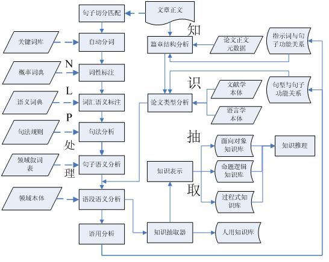 | 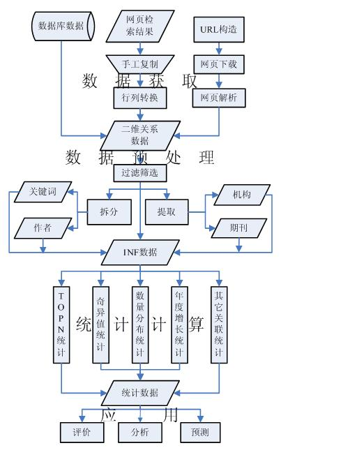 |
|---|---|
| (a)2 | (b)3 |
| 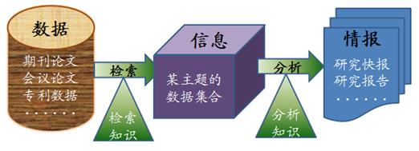 | 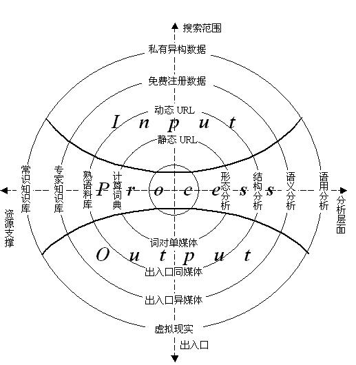 |
| (c)4 | (d)5 |
课题技术路线图示例
注：以下示例图来源于丁香园。
经典的流程图
以各种流程图模块组合表述课题研究方法步骤
| 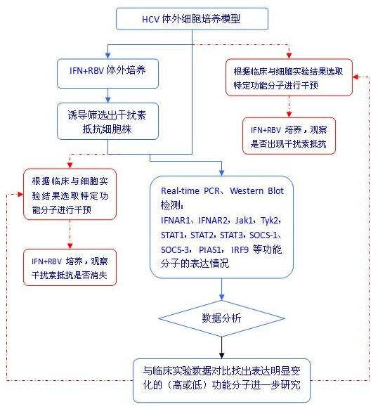 | 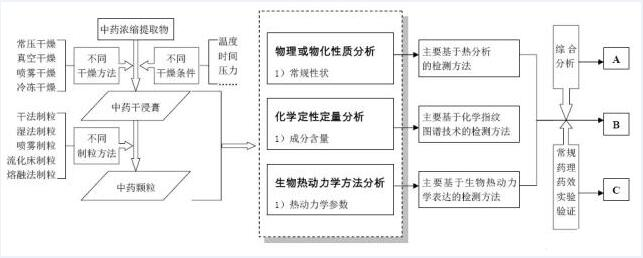 |
|---|---|
| (a) | (b) |
方框+线条
这类流程图主要用线段+方框的形式，指向性非常明确
| 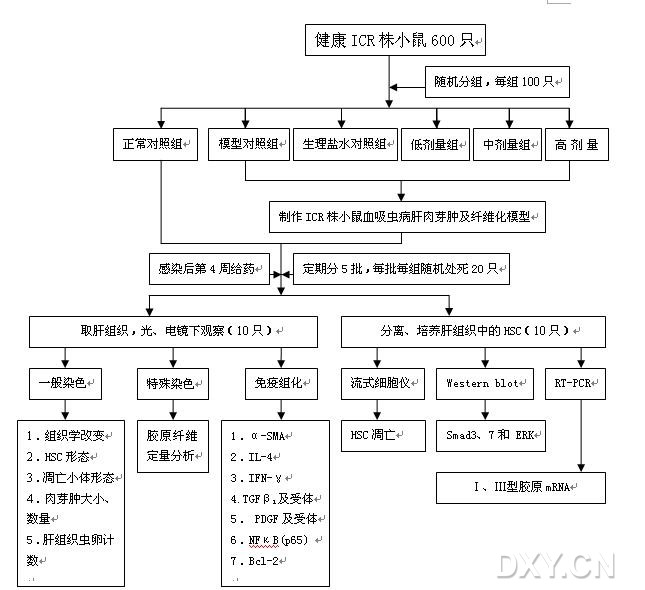 | 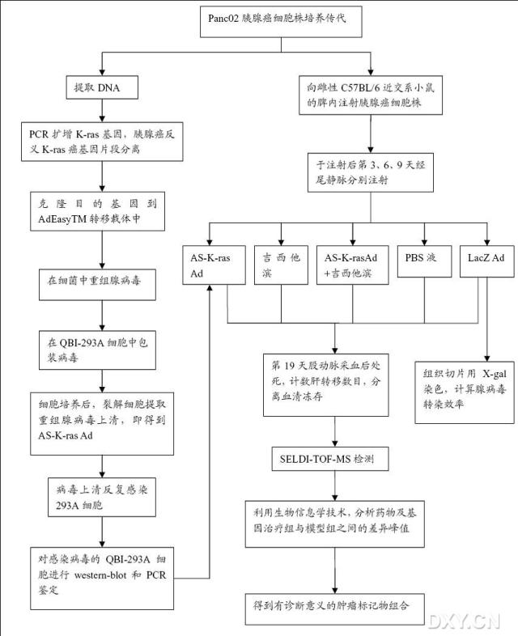 |
|---|---|
| (a) | (b) |
文字+虚实线条
这类流程图主要用虚实线条+文字，看起来纯粹，清爽
| 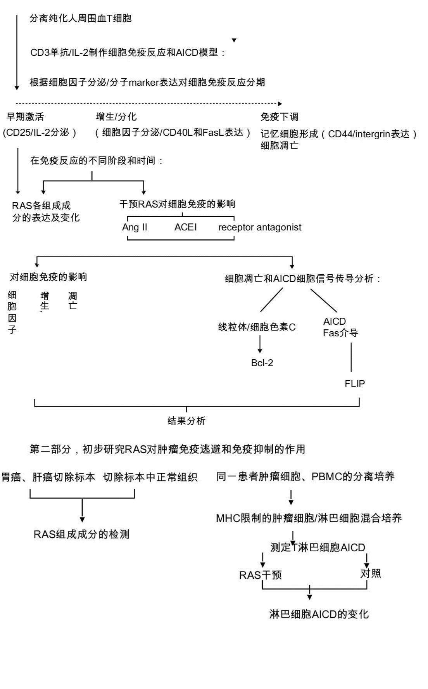 | 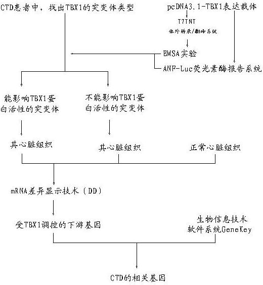 |
|---|---|
| (a) | (b) |
文字+方框+线条
这类流程图主要用箭头指向连接文字和方框，文字和方框分别表示不同意义，表述更加明晰
| 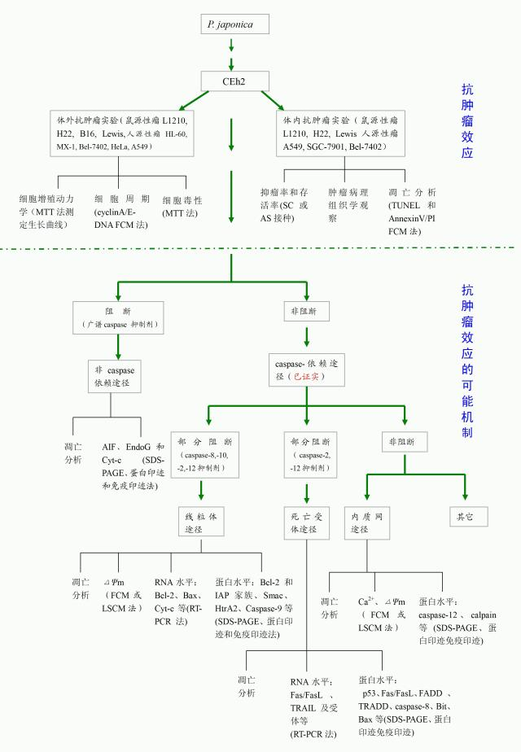 | 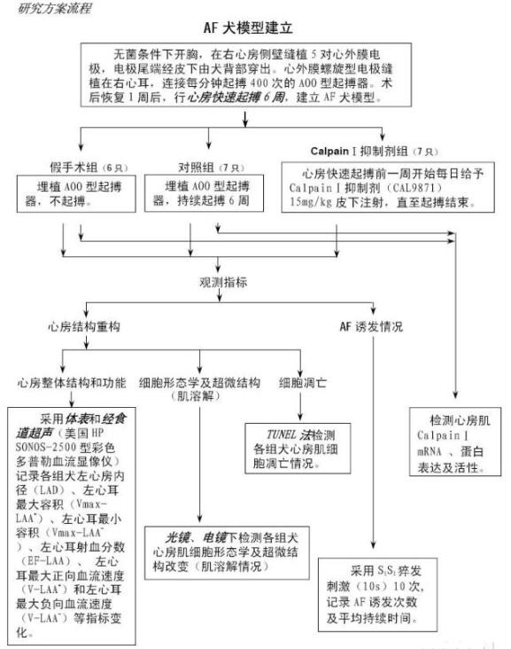 |
|---|---|
| (a) | (b) |
方框+图形+线条
这类流程图主要用箭头指向连接文字和方框，同时又把相关理论、可能产生的结果等以图形的形式加入到流程图中，能使评审专家更加明确的知道申请人在项目研究中所运用的科学原理和技术手段，有利于形象化地理解申请人的研究思路和具体实现方法。
| 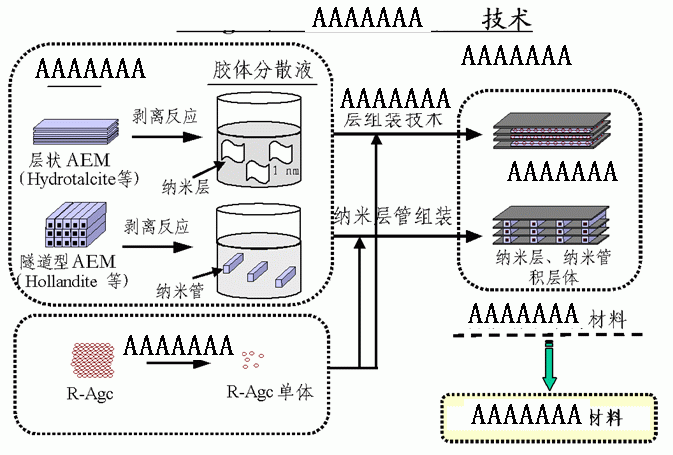 | 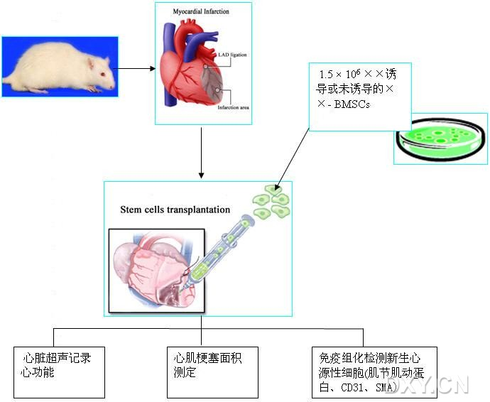 |
|---|---|
| (a) | (b) |
| 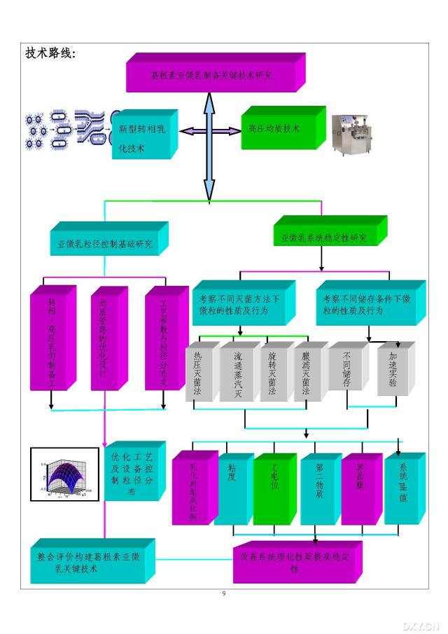 | 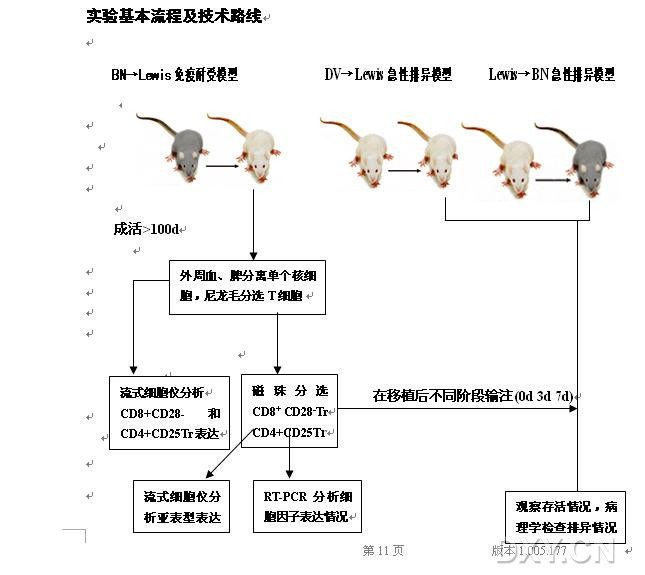 |
| (c) | (d) |
图形+线条
这类流程图直接以图形表示所运用原理、结果，用线条表示应用的步骤，配以适当的文字，表述更加形象和直观，但是，由于图形结果的专业性强，对评审专家要求更高，必须是小同行类型的专家，否则难以理解申请人的意图，不利于项目申请。
| 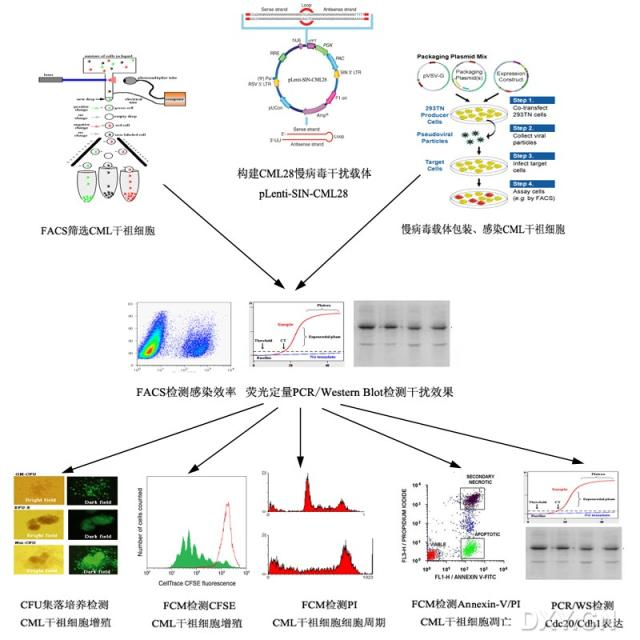 | 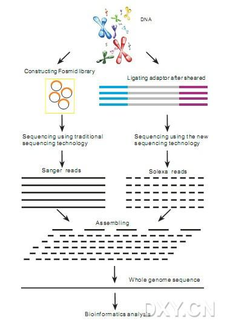 |
|---|---|
| (a) | (b) |